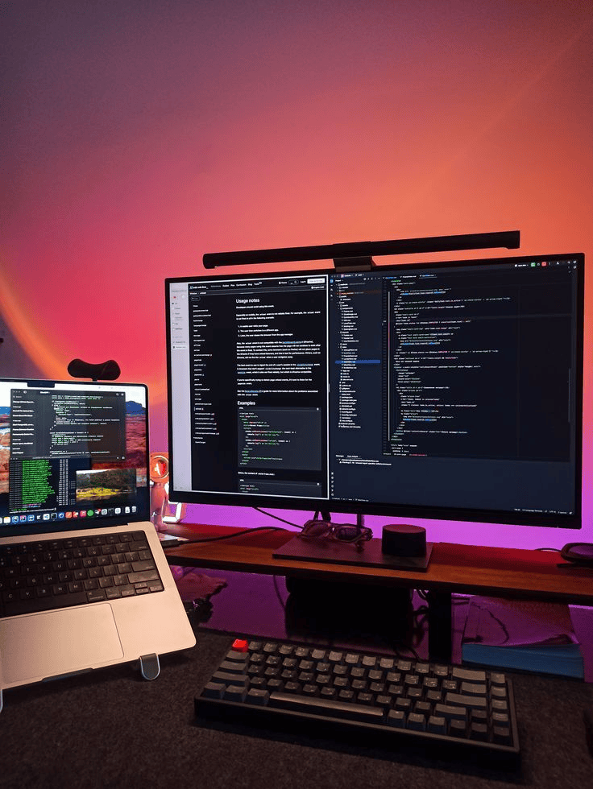

I am a Software Engineering Student & Full-Stack Developer Passionate about creating innovative solutions and mastering the art of coding. Passionate about creating innovative solutions and mastering the art of coding.
Welcome to My Portfolio
About Me
Introduction

I am Milki, a third-year software engineering student with a strong foundation in JavaScript and a focus on building scalable and efficient applications. My experience includes developing a web application for task management, integrating APIs, and deploying applications on Render. I have worked on building RESTful APIs for real-time data processing and developing data visualization dashboards using JavaScript frameworks like React. Passionate about creating user-centric solutions, I strive to contribute to impactful projects that improve overall user experience and drive business outcomes.
Listen
Education
-
Bachelor of Software Engineering
Addis Ababa University, Ethiopia
Expected Graduation: Aug 2027
Currently pursuing a Bachelor's degree with a focus on building a strong foundation in software engineering principles, programming languages, and system architecture. Through my coursework, I've gained a deep understanding of data structures, algorithms, and the intricacies of web development, which have provided me with a solid technical skillset. This includes working with languages like JavaScript, HTML, and CSS, as well as frameworks such as React to build interactive web applications.
My studies also emphasize the importance of software testing, quality assurance, and understanding complex systems, allowing me to approach problem-solving with a comprehensive mindset. As I progress through the program, I have developed a passion for tackling real-world software engineering challenges and actively seek opportunities to apply my skills in practical settings, both through academic projects and personal coding initiatives. -
Relevant Coursework:
- Data Structures and Algorithms
- Web Development (HTML, CSS, JavaScript, React)
- Computer Architecture
- Fundamentals of Software Engineering
- Software Testing and Quality Assurance
- Databases and SQL
- Operating Systems
-
Achievements:
- Developed a payroll management system during an internship, integrating biometric verification and tax calculations.
- Certified in Full-Stack Web Development, covering frameworks like React and Node.js.
- Completed 100+ LeetCode problems
- Active member of the university's Google Developers Club
- Certified in Advanced Java Programming, with hands-on experience building scalable applications.
Expertise
-
Programming Languages:
- JavaScript
- TypeScript
- Python
- Java
- SQL
- Web Development: Proficient in React, HTML5, CSS3, and Node.js. Experience with building responsive and user-centric interfaces.
- Backend Development: Skilled in creating RESTful APIs, integrating third-party APIs, and using databases like Supabase and MongoDB.
- DevOps: Experience deploying applications on Render and version control with Git/GitHub.
- Problem Solving: Completed 50+ LeetCode problems focusing on sliding window, dynamic programming, and greedy algorithms.
Work Experience
Intern, NH Business Center (Jul 2024 - Oct 2024) Contributed to developing a payroll website with tax integration, automating payroll processes for businesses. Implemented biometric authentication and attendance tracking using a deep learning Java framework, improving accuracy and security. Enhanced data management and user authentication through back-end development with Java and SQL. Collaborated with senior developers to resolve issues, optimize performance, and enhance the user experience. Gained practical exposure to machine learning techniques applied to biometric data, deepening expertise in AI technologies.
Hobby
Exploring Artificial Intelligence: One of my favorite hobbies is diving into the fascinating world of AI, where creativity meets cutting-edge technology. I enjoy experimenting with machine learning algorithms, training models to uncover patterns in data, and developing small AI-powered projects that solve practical problems. From building chatbots that can engage in meaningful conversations to creating recommendation systems that mimic human decision-making, this hobby constantly challenges me to think innovatively. I find joy in exploring platforms like Hugging Face and TensorFlow, where I can tinker with tools and libraries that make AI accessible. For me, AI is not just about technology—it’s about understanding how intelligence works and using that knowledge to create something impactful. It’s a journey of constant learning and discovery, and it fuels my passion for pushing the boundaries of what’s possible.

Certificate
Testimonials

The quality of work and attention to detail exceeded our expectations.
Delivered the project on time and with exceptional quality.
BLOG

The Future of Web Design
The future of web design is driven by innovation, personalization, and inclusivity, shaping digital experiences that are more dynamic and user-centric. With advancements in AI, designers can create smarter interfaces that adapt to individual preferences in real time, offering a tailored experience. Immersive technologies like AR and VR are merging the physical and digital worlds, redefining how users interact with content. Accessibility and inclusivity are becoming non-negotiable, ensuring designs cater to diverse audiences. Sustainable design practices are also gaining traction, focusing on energy-efficient websites. As technology evolves, web design will continue to balance creativity with functionality, enhancing engagement for all.
Mastering CSS Grid Layout
CSS Grid is a revolutionary layout system that makes creating complex designs easy. Unlike traditional methods like floats or flexbox, Grid introduces a two-dimensional grid-based approach.
For example, you can define rows and columns explicitly, making layout structures more intuitive. Here's a simple example:
.container {
display: grid;
grid-template-columns: repeat(3, 1fr);
gap: 10px;
}
This code creates a container with three equal-width columns and a 10px gap between items. As you delve deeper into CSS Grid, you'll unlock tools like `grid-area`, `grid-template-areas`, and `auto-fit` for responsive design. Start experimenting with CSS Grid, and watch your layouts transform!

The Importance of Accessibility
Accessibility is crucial in creating an inclusive world where everyone, regardless of ability, can participate and thrive. In digital spaces, accessibility ensures that websites, apps, and technologies are usable by individuals with disabilities, such as those with visual, auditory, or motor impairments. By incorporating accessibility features like screen reader compatibility, keyboard navigation, and alternative text for images, we not only comply with ethical and legal standards but also enhance user experience for all. Accessibility benefits businesses by reaching wider audiences and fostering innovation through universal design. Ultimately, prioritizing accessibility reflects a commitment to equity, breaking barriers, and empowering every individual.
What I Can Do For You

Service 1
Description of service 1
Service 2
Description of service 2
Service 3
Description of service 3
My Work

Project 1
Description of project 1
Project 2
Description of project 2
Project 3
Description of project 3